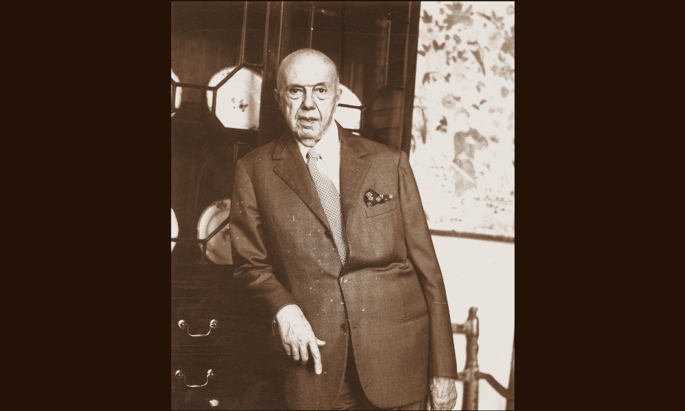

Accorsi
Torino, entità attiva dal 1912 al 1975

- PERSONA
- Pietro Accorsi, 1891–1892, antiquario
- INSEGNA
- Galleria Accorsi
- IN CATALOGO
- Opere transitate, catalogo della Fondazione Zeri →
Pietro Accorsi (1891-1982) fu uno degli antiquari torinesi più influenti del Novecento. Iniziò la sua attività in giovane età, aprendo nel 1912 una galleria in via Po 55. Accorsi si inserì sulla scia della ricostruzione che coinvolse l'ex capitale sabauda nella seconda metà degli anni Ottanta, riscontrando un immediato successo. Inizialmente trattò dipinti tardo medievali, che in quel momento storico riscuotevano grande favore, per poi dedicarsi, a partire dagli anni Venti del Novecento, alla promozione dell'arte piemontese della stagione tardobarocca e neoclassica. A svolgere un ruolo fondamentale nella carriera dell'antiquario fu Umberto II di Savoia (1904-1983), con il quale dal 1925 instaurò un felice sodalizio che gli garantì l'accesso alla più esclusiva clientela locale.
Pietro Accorsi non fu solo un antiquario ma anche un arredatore raffinato. All'interno del mondo antiquariale si distinse infatti per l'attenzione alla decorazione degli ambienti in cui esponeva le sue opere. Come dimostrano i documenti del suo archivio, un ruolo chiave nella sua attività era ricoperto infatti da un gruppo di artigiani locali che realizzavano mobili in stile che completavano e rendevano più gradevole l'allestimento. Tra i clienti più importanti dell'antiquario, oltre ai maggiori rappresentanti dell'industria torinese, lombarda e a membri dell'aristocrazia italiana ed europea, vi fu Donna Isabelle Sursock Colonna (1889-1984), per la quale l'antiquario arredò l'appartamento di Palazzo Colonna a Roma.
Nel corso del tempo Accorsi accumulò una notevole collezione personale, trasformando Villa Paola, la propria residenza di campagna, nella più raffinata testimonianza del suo gusto. Tale raccolta è poi confluita nella Fondazione Accorsi-Ometto, istituita nel 1975 e situata negli spazi della "Galleria Accorsi" di via Po, sede del Museo di Arti Decorative. L'istituzione, oltre ad ospitare la collezione dell'antiquario, accoglie anche parte degli oggetti raccolti da Giulio Ometto (1942-2019), stretto collaboratore di Accorsi negli ultimi anni di vita.
Altri antiquari
Clienti
- Isabelle Sursock Colonna
- Umberto II di Savoia
Collaboratori
- Giulio Ometto (storico dell'arte)
Eventi significativi nell'attività antiquariale
- 1975 - Inaugurazione Fondazione Accorsi-Ometto: Negli spazi della Galleria Accorsi di via Po' viene istitutita la Fondazione Accorsi-Ometto, oggi sede del Museo di arti decorative, che accoglie, oltre alla collezione Accorsi, anche parte degli oggetti raccolti da Giulio Ometto
Bibliografia essenziale
- Antonetto, R., Cottino, A. (1999), Pietro Accorsi: un antiquario, un'epoca, Torino, Omega Arte
- Mana, L. (2022), Pietro Accorsi e il riuso dell'antico. Un avvio di ricerche, in D'Italia, Mana, Natale, Galateri di Genola, pp. 45-52
- Natale, V. (2022), Gotico e Rinascimento in Piemonte di Pietro Accorsi, in D'Italia, Mana, Natale, Galateri di Genola, pp. 23-44
- Rizzo, R. (2016), Pietro Accorsi il mercante di meraviglie: da rigattiere bambino a fondatore di un grande museo d'antiquariato, Cinisello Balsamo, Silvana
Interviste
- 3/23/2023, Intervista a Luca Mana, Torino